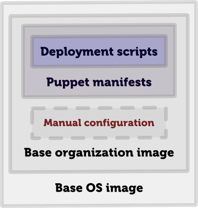

- Introduction, background, path, reasoning
- Demo and try-out of (biased) integration of Gradle + Puppet
- Gradle
- VirtualBox
- Vagrant
- Big projects built by Ant, Maven, and eventually Gradle
- Teams composed mostly of Java developers
- Complex (sometimes, over-engineered) architectures
- Many environments (DEV, TEST, QA, SIT, UAT, PRE-PROD, PROD) to support
- Infrastructure is influenced by (relatively) frequent architecture changes (components, versions, layers)
- We want our environments to be the same (or at least quite similar) to avoid any side effects during development, testing and production
- We don't want to spend hours/days/weeks on configuring each and every new server and keeping them in-sync
- Operations guys are not always available (e.g. busy supporting production systems or just not skilled enough)
- Development infrastructure (Jenkins, Sonar, Version Control, Load Testing etc.) also needs maintenance
- We want to reuse experience available in our team and avoid throwing in too many various trendy technologies that will fail our expectations
- How do I connect (ssh) to my server to perform actions required for deployment?
- How do I store my configuration for various servers? How do I store secrets?
- How do I ensure that remote server has everything on it to run my application?
- How do I verify that my automation works (prefferably without breaking anything important)?
- DEV << QA <<< PROD
- DEV < QA < PROD
- DEV ~ QA ~ PROD
- DEV = QA = PROD
Keep it in version control

How do I connect to my server?
ant.taskdef(
name: 'scp',
classname: 'o.a.t.a.t.o.ssh.Scp',
classpath: configurations.secureShell.asPath)
ant.taskdef(
name: 'sshexec',
classname: 'o.a.t.a.t.o.ssh.SSHExec',
classpath: configurations.secureShell.asPath)
ant.sshexec(
host: host,
username: user,
password: password,
command: command,
trust: 'true',
failonerror: failOnError)
Next step: wrapper function
def ssh(String command,
Properties props,
boolean failOnError = false,
String suCommandQuoteChar = "'",
String outputProperty = null) {
...
}
Next step: wrapper function
def scp(String file,
String remoteDir,
Properties props) {
...
}
task installFonts << {
forAllServers { props ->
ssh('yes | yum install *font*', props)
}
}
task uninstallNginx << {
forAllServers { props ->
ssh('/etc/init.d/nginx stop', props)
ssh('yes | yum remove nginx', props, true)
ssh('rm -rf /etc/yum.repos.d/nginx.repo', props)
ssh('rm -rf /var/log/nginx', props)
ssh('rm -rf /etc/nginx /var/nginx', props)
}
}
- New connection each time
- Excplicit repeating parameters
- Complex scripts are hard to maintain
- Tasks are not idempotent
- jsch
- sshj
- overthere
- sshoogr
Groovy-based SSH DSL for:
- Remote command execution
- File uploading/downloading
- Tunneling
@Grab(
group='com.aestasit.infrastructure.sshoogr',
module='sshoogr',
version='0.9.16')
import static com.aestasit.ssh.DefaultSsh.*
defaultUser = 'root'
defaultKeyFile = new File('secret.pem')
execOptions {
verbose = true
showCommand = true
}
Sshoogr usage (connection)
remoteSession {
url = 'user2:654321@localhost:2222'
exec 'rm -rf /tmp/*'
exec 'touch /var/lock/my.pid'
remoteFile('/var/my.conf').text = "enabled=true"
}
Sshoogr usage (multi-line content)
remoteFile('/etc/yum.repos.d/puppet.repo').text = '''
[puppet]
name=Puppet Labs Packages
baseurl=http://yum.puppetlabs.com/el/
enabled=0
gpgcheck=0
'''
Sshoogr usage (file copying)
remoteSession {
scp {
from { localDir "$buildDir/application" }
into { remoteDir '/var/bea/domain/application' }
}
}
Sshoogr usage (command result)
def result = exec(command: '/usr/bin/mycmd',
failOnError: false, showOutput: false)
if (result.exitStatus == 1) {
result.output.eachLine { line ->
if (line.contains('WARNING')) {
throw new RuntimeException("Execution failed with: ${line}")
}
}
}
Sshoogr usage (shortcuts)
if (ok('/usr/bin/mycmd')) {
...
}
if (fail('/usr/bin/othercmd')) {
...
}
tunnel('1.2.3.4', 8080) { int localPort ->
def url = "http://localhost:${localPort}/flushCache"
def result = new URL(url).text
if (result == 'OK') {
println "Cache is flushed!"
} else {
throw new RuntimeException(result)
}
}
Sshoogr usage (prefix/suffix)
prefix('sudo ') {
exec 'rm -rf /var/log/abc.log'
exec 'service abc restart'
}
suffix(' >> output.log') {
exec 'yum -y install nginx'
exec 'yum -y install mc'
exec 'yum -y install links'
}
How do I verify that my automation works?
Virtualization is the key!
Multi-core machine is a must!
- Powerful virtualization product for enterprise as well as home use
- It has nice GUI and command line tools with tons of parameters
- It is open-source and free for personal use
- Created by innotek GmbH
- Open-sourced in 2007
- innotek was acquired by Sun in 2008
- Sun was acquired by Oracle in 2010
- Simplified VirtualBox management (networking, security, shared drives, etc.)
- Easy to read and share configuration
- Package virtual machines as reusable boxes
vagrant init ubuntu/trusty64
vagrant up
vagrant ssh
What if there is no suitable box there?
- Download ISO file with your (favorite) OS
- Download VirtualBox guest additions ISO to match VirtualBox version
- Free up local disk space (2x used virtual disk size + ISO size)
- Set-up environment variables
- Create Packer's JSON configuration
- Start Packer build
- Go somewhere for 30-40 minutes
packer build -force solaris11.json
vagrant box add my/solaris11 solaris11.box --forcevagrant init my/solaris11vagrant up
- First resize the file inside VirtualBox
- Then resize partition in the guest OS
- Choose maximum size carefully
VBoxManage modifyhd <absolute path to file> \
--resize <size in MB>
From scripts to declarations
Deployment vs. Infrastructure management
Sshoogr + Gradle + Puppet
task uploadModules << {
remoteSession {
exec 'rm -rf /tmp/repo.zip'
scp {
from { localFile "${buildDir}/repo.zip" }
into { remoteDir "/root" }
}
...
...
exec 'rm -rf /etc/puppet/modules'
exec 'unzip /tmp/repo.zip -d /etc/puppet/modules'
}
}
task puppetApply(dependsOn: uploadModules) << {
remoteSession {
scp {
from { localFile "${buildDir}/setup.pp" }
into { remoteDir "/tmp" }
}
exec 'puppet apply /tmp/setup.pp'
}
}
- Separated infrastructure state description and operations tasks
- Scripts became more maintainable and idempotent
How do I store my configuration?
What to do if environment has more than 1 server?
Puppet module repositories
- Puppet forge
- Pulp
- GitHub
- Maven as a repository
- Puppet module tool
- Puppet librarian
- r10k
- Puppet Module Installer
Configuration code coverage

Happy infrastructure management!